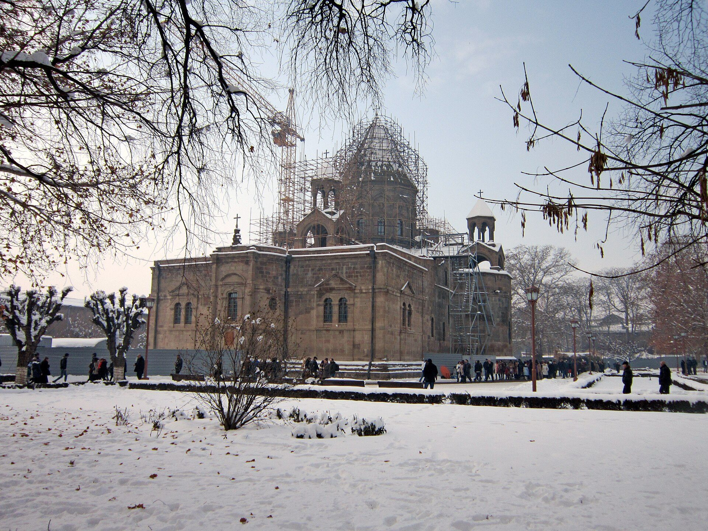
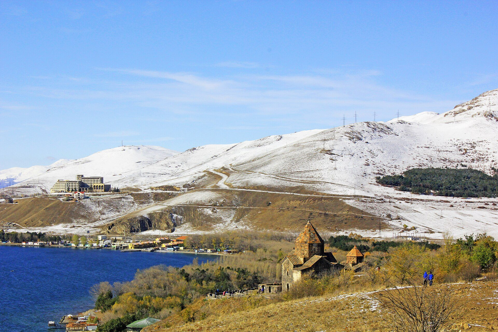
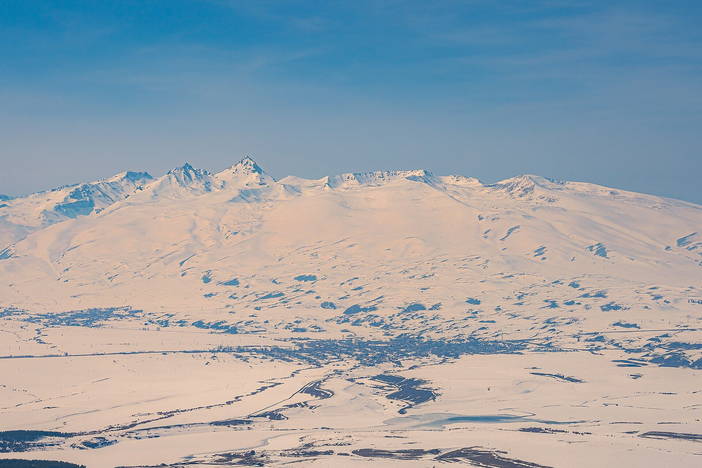
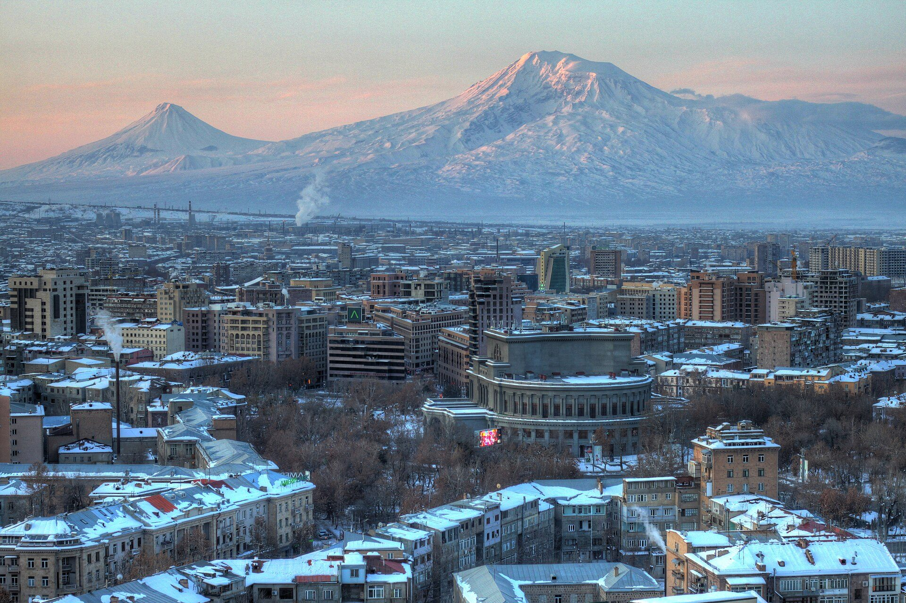
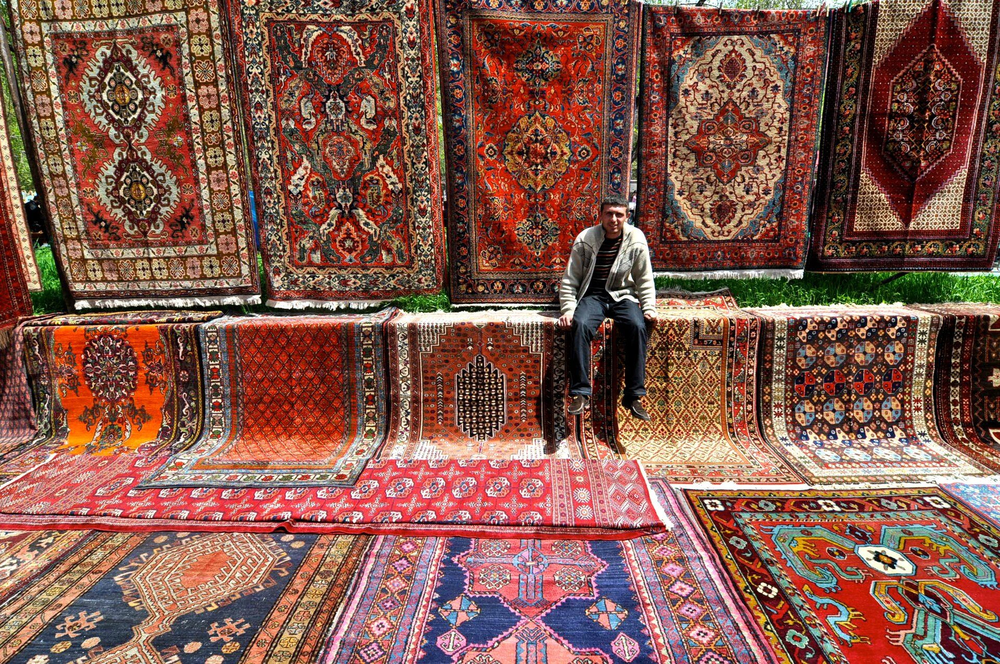
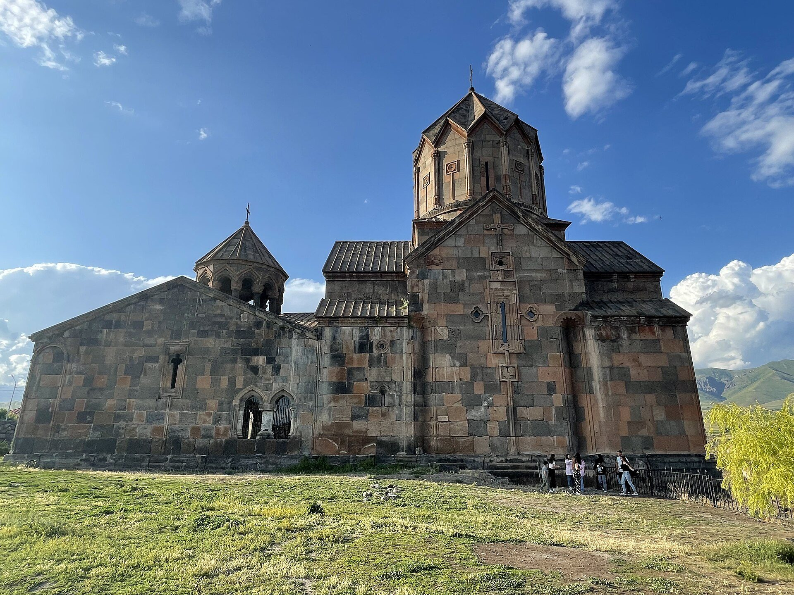

Программа
Прилёт в Ереван
Встреча в международном аэропорту Звартноц и трансфер в отель в центре Еревана. Заселение и отдых после перелёта. Если останутся силы — неспешная первая прогулка по вечернему городу из розового туфа.

История, коньяк и ковры Еревана
Знакомство с Арменией начинается в Историческом музее на площади Республики: от первобытных находок и сокровищ царства Урарту до средневековья и новейшей истории — тысячелетия армянской истории за одно утро. Затем — Ереванский коньячный завод «Арарат»: старинные погреба с выдерживающимся в дубовых бочках коньяком, рассказ о том, как армянский коньяк стал знаменитым на весь мир, и дегустация. Днём — Megerian Carpet, где по старинным технологиям ткут и реставрируют ковры ручной работы, а нити окрашивают натуральными красителями. Вечер свободный: прогулка по Каскаду и Северному проспекту.
Ужин — по желанию, в стоимость тура не входит.



Эчмиадзин, Мачаненц и Воскеваз
Утром — Вагаршапат и Эчмиадзинский кафедральный собор, один из древнейших христианских храмов мира и духовный центр Армянской апостольской церкви. Затем — экскурсия в доме Мачаненц: тёплый семейный дом, где рассказывают о традиционном армянском быте и угощают домашними блюдами. После обеда — винзавод Воскеваз в здании в стиле средневековой крепости: экскурсия по погребам и дегустация вин из армянских сортов винограда. Вечером — село Оганаван на краю ущелья Касах, рядом с монастырём Оганаванк.
Ужин в Оганаване — по желанию, в стоимость тура не входит.



Гарни, Гегард и озеро Севан
Языческий храм Гарни I века — единственный сохранившийся в Армении храм греко-римской эпохи — стоит над ущельем реки Азат. Внизу ущелья — Симфония камней: гигантские базальтовые столбы, похожие на трубы органа. Дальше — монастырский комплекс Гегард, частично высеченный прямо в скале и включённый в список ЮНЕСКО. Во второй половине дня — озеро Севан, «голубая жемчужина» Армении, и монастырь Севанаванк на полуострове с панорамой на озеро и горы.
Ужин на берегу Севана — по желанию, в стоимость тура не входит.


MyLer Mountain — экстрим и спорт
День активного отдыха на горном курорте MyLer Mountain с видом на Арагац: лыжи и сноуборд на трассах разной сложности, свежий горный воздух и адреналин. Подойдёт и опытным райдерам, и тем, кто встаёт на лыжи впервые, — а кто не катается, может просто насладиться горными пейзажами.
Прокат снаряжения и инструктор — по желанию, оплачиваются отдельно. Катание зависит от снега и погодных условий.
Отъезд
Выселение из отеля и трансфер в международный аэропорт Звартноц. Счастливого пути — и до новых встреч в Армении!